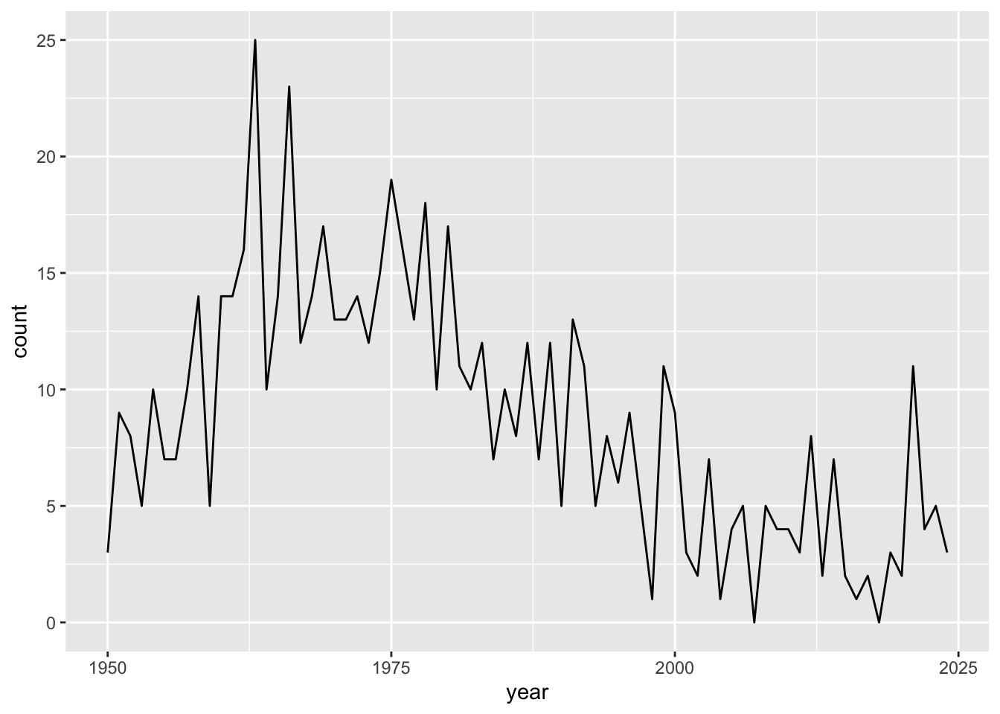
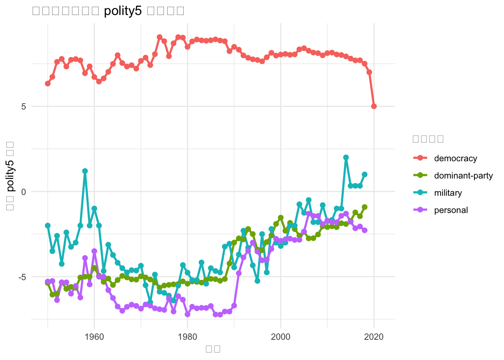

pacman::p_load(tidyverse, janitor, data.table, readxl, vdemdata, zoo, plm, democracyData, fuzzyjoin, survival, stargazer)Setup
leaders dataset
Archigos Dataset
# Download Archigos data
archigos_url <- "http://ksgleditsch.com/data/1March_Archigos_4.1.txt"
archigos_raw <- fread(archigos_url, encoding = "Latin-1")
# Clean and process Archigos data
archigos <- archigos_raw |>
mutate(
startdate = ymd(startdate),
enddate = ymd(enddate),
# Correct start dates for specific observations
startdate = case_when(
obsid == "GAB-1964-2" ~ ymd("1960-08-17"),
obsid == "CHA-1990" ~ ymd("1990-12-2"),
obsid == "RUS-2000" ~ ymd("1999-12-31"),
TRUE ~ startdate
),
entry = case_when(
obsid == "GAB-1964-2" ~ "Regular",
TRUE ~ entry
)
) |>
filter(
!obsid %in% c("GAB-1960", "GAB-1964-1"),
startdate != enddate
)
# Save cleaned Archigos data
write_csv(archigos, "archigos_clean.csv")PLAD Dataset
# Download PLAD data
plad_url <- "https://dataverse.harvard.edu/api/access/datafile/10119324"
download.file(plad_url, "PLAD.xls")
# Read and process PLAD data
plad_raw <- read_excel("PLAD.xls") |>
mutate(
exit = case_when(
exit == "Still in office" ~ "Still in Office",
TRUE ~ exit
)
)
# Save cleaned PLAD data
write_csv(plad_raw, "plad_clean.csv")
plad <- plad_raw |>
select(country, continent, 1:6, entry, exit, gender, yrborn, birthdate) |>
mutate(
startdate = dmy(startdate),
birthdate = dmy(birthdate),
enddate = case_when(
exit == "Still in Office" ~ Sys.Date(),
TRUE ~ dmy(enddate)
),
yrborn = as.numeric(yrborn)
) |>
filter(startdate != enddate)Warning: There were 2 warnings in `mutate()`.
The first warning was:
ℹ In argument: `birthdate = dmy(birthdate)`.
Caused by warning:
! 402 failed to parse.
ℹ Run `dplyr::last_dplyr_warnings()` to see the 1 remaining warning.# Save processed PLAD data for further analysis
write_csv(plad, "plad_processed.csv")Leaders Dataset: Archigos and PLAD
# Combine Archigos and PLAD data
leaders <- archigos |>
full_join(plad, by = join_by(idacr, startdate), suffix = c(".archigos", ".plad")) |>
group_by(idacr) |>
fill(ccode, country, continent, .direction = "downup") |>
ungroup() |>
mutate(
obsid = coalesce(obsid, plad_id),
leader = coalesce(leader.archigos, leader.plad),
enddate = coalesce(enddate.plad, enddate.archigos),
entry = coalesce(entry.plad, entry.archigos),
exit = coalesce(exit.plad, exit.archigos),
enddate = if_else(exit == "Still in Office", Sys.Date(), enddate),
gender = coalesce(gender.archigos, gender.plad),
yrborn = coalesce(yrborn.archigos, as.numeric(yrborn.plad)),
age = year(enddate) - yrborn,
exitcode = case_when(
is.na(exitcode) ~ exit,
exitcode == "Still in Office" & exit != "Still in office" ~ exit,
TRUE ~ exitcode
),
exitcode = case_when(
leader %in% c("Mugabe", "Al-Bashir", "Ibrahim Boubacar Keita", "Win Myint", "Deby", "Conde", "Bah Ndaw", "Roch Marc Christian Kabore", "Paul-Henri Sandaogo Damiba", "Ali Bongo Ondimba", "Mohamed Bazoum") ~ "Coup",
TRUE ~ exitcode
)
) |>
select(1:4, country, continent, leader, startdate, enddate, entry, exit, exitcode, gender, yrborn) |>
arrange(ccode, startdate) |>
filter(year(enddate) > 1940)
# Save combined leaders dataset
write_csv(leaders, "leaders_combined.csv")Coup analysis dataset
Polity5 Dataset
polity5 <- democracyData::polity5
polity <- polity5 |>
mutate(polity5 = ifelse(polity < -10, NA, polity)) |>
select(ccode = polity_annual_ccode, country = polity_annual_country, year, polity5) |>
group_by(ccode) |>
fill(polity5, .direction = "downup") |>
mutate(
diff1 = dplyr::lead(polity5, 1) - polity5,
diff2 = dplyr::lead(polity5, 2) - polity5,
diff3 = dplyr::lead(polity5, 3) - polity5,
diff4 = dplyr::lead(polity5, 4) - polity5,
diff5 = dplyr::lead(polity5, 5) - polity5
) |>
ungroup() |>
filter(year >= 1940)# polityIV |>
# filter(year > 1940) |>
# #view()
# group_by(year) |>
# summarise(
# polity5_avg = mean(polity, na.rm = T),
# polity2_avg = mean(polity2, na.rm = T)
# ) |>
# ggplot(aes(y = polity5_avg, x = year)) +
# geom_point()
#
# polityIV |>
# filter(year > 1940) |>
# group_by(year) |>
# summarise(
# polity5_avg = mean(polity, na.rm = T),
# polity2_avg = mean(polity2, na.rm = T)
# ) |>
# ggplot(aes(y = polity2_avg, x = year)) +
# geom_point()Political Violence Dataset: MEPV
# Download MEPV data
violence_url <- "http://www.systemicpeace.org/inscr/MEPVv2018.xls"
download.file(violence_url, "political_violence_2018.xls")
political_violence <- read_excel("political_violence_2018.xls") |>
select(ccode, year, violence = actotal)GDP and population Dataset
GDP <- vdem |>
select(ccode = COWcode, country = country_name, year, GDP_pc = e_gdppc, pop = e_pop) |>
filter(year >= 1940) |>
# Create a new variable for 5-year moving average of GDP growth
mutate(
GDP_trend = GDP_pc / lag(rollapply(GDP_pc,
width = 5,
FUN = mean,
align = "right",
fill = NA
)),
.by = c(ccode)
) |>
mutate(pop_log = log(pop)) |>
select(ccode, year, GDP_pc, GDP_trend, pop_log)
# vdemdata::codebook |>
# view()Regime Type Dataset
regimes <- REIGN |>
select(
ccode = GWn,
country = extended_country_name,
year,
regime_type = gwf_regimetype
) |>
distinct(ccode, year, .keep_all = T) |>
mutate(
regime_coup = case_when(
regime_type %in% c(
"party-based",
"party-personal",
"party-military",
"party-personal-military",
"oligarchy"
) ~ "dominant-party",
regime_type == "personal" ~ "personal",
regime_type %in% c("military", "military personal", "indirect military") ~ "military",
regime_type == "monarchy" ~ "monarchy",
regime_type %in% c("presidential", "parliamentary") ~ "democracy",
TRUE ~ "other"
),
regime_autocoup = case_when(
regime_type %in% c(
"party-based",
"party-personal",
"party-military",
"party-personal-military",
"oligarchy"
) ~ "dominant-party",
regime_type == "personal" ~ "personal",
regime_type %in% c("military", "military personal", "indirect military") ~ "military",
regime_type == "monarchy" ~ "monarchy",
regime_type == "presidential" ~ "presidential",
regime_type == "parliamentary" ~ "parliamentary",
TRUE ~ "other"
)
) |>
select(country, ccode, year, regime_coup, regime_autocoup)
regimes |>
select(regime_coup, year) |>
filter(
year > 1940,
year < 2021,
regime_coup %in% c("dominant-party", "military", "personal")
) |>
group_by(year, regime_coup) |>
summarise(count = n()) |>
mutate(share = count / sum(count)) |>
# view()
# filter(regime_coup != "democracy") |>
ggplot(aes(x = year, y = count, color = regime_coup)) +
geom_line() +
labs(title = "Regime Type Over Time", x = "Year", y = "Share") +
theme_minimal()`summarise()` has grouped output by 'year'. You can override using the
`.groups` argument.
regimes |>
select(regime_coup, year) |>
filter(year > 1940, year < 2021) |>
count(year, regime_coup) |>
pivot_wider(
names_from = regime_coup,
values_from = n,
values_fill = 0
) |>
rowwise() |>
mutate(total = sum(across(-year))) |>
rename_all(str_to_title) |>
tail(10)# A tibble: 10 × 8
# Rowwise:
Year Democracy `Dominant-Party` Monarchy Personal Other Military Total
<dbl> <int> <int> <int> <int> <int> <int> <int>
1 2011 119 26 13 25 8 3 194
2 2012 123 25 13 23 8 2 194
3 2013 123 25 13 23 8 2 194
4 2014 123 25 13 22 9 2 194
5 2015 126 25 13 20 7 3 194
6 2016 127 25 13 20 6 3 194
7 2017 127 25 13 20 6 3 194
8 2018 128 26 13 19 5 3 194
9 2019 130 25 13 18 5 3 194
10 2020 128 25 13 17 8 3 194Coup Analysis Dataset
# Download coup data
coup_url <- "https://www.uky.edu/~clthyn2/coup_data/powell_thyne_ccode_year.txt"
coup_total <- fread(coup_url)
coup_total <- coup_total |>
mutate(
coup = case_when(
coup1 == 0 ~ 0,
coup4 == 2 | (coup4 == 0 & coup3 == 2) | (coup4 == 0 & coup3 == 0 & coup2 == 2) | (coup4 == 0 & coup3 == 0 & coup2 == 0 & coup1 == 2) ~ 2,
TRUE ~ 1
)
) |>
select(1:4, coup)coup_all <- fread(coup_url) |>
mutate(
coup = case_when(
coup1 == 0 ~ 0,
coup1 == 2 | coup2 == 2 | coup3 == 2 | coup4 == 2 ~ 2,
TRUE ~ 1
)
) |>
group_by(ccode) |>
arrange(year) |>
mutate(
pre_coups = lag(cumsum(coup %in% c(1, 2)), default = 0),
last_coup_year = lag(case_when(
coup %in% c(1, 2) ~ year,
TRUE ~ NA_integer_
)),
last_coup_year = case_when(
year == min(year) ~ year,
TRUE ~ last_coup_year
)
) |>
fill(last_coup_year, .direction = "down") |>
mutate(
time_since_last_coup = year - last_coup_year,
coup_dummy = case_when(
pre_coups == 0 ~ 0,
TRUE ~ 1
)
) |>
select(ccode, year, coup, pre_coups, time_since_last_coup, coup_dummy)
write.csv(coup_all, "coup_all.csv")
coup_all |>
select(year, coup) |>
group_by(year) |>
summarise(count = sum(coup)) |>
ggplot(aes(x = year, y = count)) +
geom_line()Adding missing grouping variables: `ccode`
Coup Analysis Model
coup_model <- regimes |>
# filter(regime_coup != "other") |>
left_join(coup_all, by = join_by(ccode, year)) |>
left_join(political_violence, by = join_by(ccode, year)) |>
left_join(GDP, by = join_by(ccode, year)) |>
mutate(violence = na.locf(violence, .by = ccode, na.rm = FALSE)) |>
mutate(
regime = fct_relevel(regime_coup, "dominant-party"),
ect = (GDP_trend - 1) * 100
) |>
filter(year > 1949) |>
select(ccode, country, year, coup, regime = regime_coup, GDP_trend = ect, GDP_pc, violence, pre_coups, coup_dummy, time_since_last_coup)
# coup_model |>
# drop_na() |>
# view()
# Save the coup analysis model
write_csv(coup_model, "coup_model.csv")Autocoup analysis Dataset
Autocoup Dataset
# Read autocoup data
autocoup_raw <- read_excel("Autocoup.xlsx", na = "Incumbent") |>
mutate(
exit_date = replace_na(exit_date, Sys.Date()),
across(everything(), str_to_sentence)
)
autocoup <- autocoup_raw |>
select(1:14) |>
mutate(
ccode = as.integer(ccode),
entry_date = as.Date(entry_date),
exit_date = as.Date(exit_date),
extending_date = make_date(year = extending_date, month = month(entry_date), day = day(entry_date)),
autocoup_date = as.integer(autocoup_date)
)
# autocoup |>
# select(8:13) |>
# dfSummary() |>
# stview()
# Save cleaned autocoup data
write_csv(autocoup, "autocoup_clean.csv")Leader_autocoup Dataset
leader_autocoup <- leaders |>
left_join(autocoup |> select(-country), by = join_by(ccode, startdate == entry_date)) |>
mutate(
autocoup_attempt = if_else(is.na(leader_name), 0, 1),
autocoup_success = if_else(!is.na(extending_date), 1, if_else(!is.na(autocoup_attempt), 0, NA)),
base_year = year(startdate + as.numeric(difftime(enddate, startdate, units = "days")) / 2),
base_year = coalesce(autocoup_date, base_year),
age = base_year - yrborn
) |>
select(1:2, leader, leader_name, age, everything())Autocoup Analysis Model
autocoup_model <- leader_autocoup |>
filter(base_year > 1944) |>
left_join(regimes, by = join_by(ccode, base_year == year)) |>
group_by(ccode) |>
fill(regime_autocoup, .direction = "updown") |>
ungroup() |>
left_join(political_violence, by = join_by(ccode, base_year == year)) |>
mutate(
violence = na.locf(violence, .by = ccode),
autocoup_outcome = case_when(
autocoup_outcome == "Yes" ~ 2,
autocoup_outcome == "No" ~ 1,
TRUE ~ NA_real_
)
) |>
left_join(GDP, by = join_by(ccode, base_year == year)) |>
filter(
!is.na(GDP_pc),
regime_autocoup != "parliamentary"
) |>
left_join(polity, by = join_by(ccode, base_year == year)) |>
select(ccode, country, base_year, leader, autocoup_attempt, autocoup_outcome, regime = regime_autocoup, GDP_pc, GDP_trend, polity5, violence, age, pop_log)
# Save the autocoup analysis model
write_csv(autocoup_model, "autocoup_model.csv")Survival Analysis Dataset
coup_success <- fread("https://www.uky.edu/~clthyn2/coup_data/powell_thyne_coups_final.txt") |>
mutate(coup_date = make_date(year = year, month = month, day = day)) |>
select(ccode, country, coup_date, coup, year) |>
filter(coup == 2)overstay_leaders <- autocoup |>
filter(autocoup_outcome == "Yes") |>
select(1:14)survival_data <- leaders |>
left_join(overstay_leaders, by = join_by(ccode, startdate == entry_date)) |>
mutate(
coup_exit = ifelse(exitcode %in% c("Removed by Military, without Foreign Support", "Removed by Other Government Actors, without Foreign Support", "Coup"), 1, 0),
coup_entry = ifelse(lag(coup_exit == 1), 1, 0),
.by = ccode
) |>
filter(!is.na(extending_date) | coup_entry == 1, year(enddate) > 1945) |>
mutate(
group = case_when(!is.na(extending_date) ~ "A", .default = "B"),
enddate = case_when(leader == "Azali Assoumani" ~ Sys.Date(), TRUE ~ enddate),
survival_days = case_when(group == "A" ~ as.numeric(enddate - extending_date), TRUE ~ as.numeric(enddate - startdate)),
year = if_else(group == "A", year(extending_date), year(startdate)),
age = year - yrborn
) |>
filter(survival_days > 180 & survival_days < 18000) |>
mutate(
status = case_when(
exit %in% c("Regular", "Natural Death", "Still in Office", "Retired Due to Ill Health") ~ 1,
.default = 2
),
startdate = coalesce(extending_date, startdate),
tstart = as.numeric(year(startdate) + (startdate - floor_date(startdate, "year")) / 365),
tstop = as.numeric(year(enddate) + (enddate - floor_date(enddate, "year")) / 365)
) |>
select(ccode, country = country.x, year, leader, startdate, enddate, tstart, tstop, status, group, survival_days, age)
# survival_data |>
# view()survival_cox_ph <- survival_data |>
left_join(GDP, by = c("ccode", "year" = "year")) |>
left_join(polity |> select(-country), by = c("ccode", "year" = "year")) |>
left_join(political_violence, by = c("ccode", "year" = "year")) |>
drop_na() |>
select(ccode, country, year, leader, age, startdate, enddate, group, survival_days, status, GDP_trend, GDP_pc, pop_log, polity5, violence)
# Save the survival Cox PH model
write_csv(survival_cox_ph, "survival_cox_ph_model.csv")survival_cox_td <- survival_data |>
mutate(first_year = startdate, last_year = enddate) |>
survSplit(Surv(year(startdate), year(enddate), status) ~ ., data = _, cut = 1945:2022, id = "id") |>
mutate(tstart = if_else(is.na(tstart), tstop, tstart)) |>
mutate(
T1 = 0,
T2 = ifelse(row_number() == 1, ceiling_date(first_year, "year") - first_year, 0),
T2 = first(T2) + 365 * (row_number() - 1),
T1 = lag(T2, default = 0),
T2 = ifelse(row_number() == n(), survival_days, T2),
age = age + row_number() - 1,
.by = id
) |>
left_join(GDP, by = c("ccode", "tstart" = "year")) |>
left_join(polity |> select(-country), by = c("ccode", "tstart" = "year")) |>
left_join(political_violence, by = c("ccode", "tstart" = "year")) |>
drop_na() |>
select(id, ccode, country, leader, age, T1, T2, tstart, tstop, group, survival_days, status, GDP_trend, GDP_pc, pop_log, polity5, violence)Warning in Surv(year(startdate), year(enddate), status): Stop time must be >
start time, NA created# Save the survival Cox TD model
write_csv(survival_cox_td, "survival_cox_td_model.csv")Running Survival Models
survival_cox_ph |>
mutate(group = factor(group, labels = c("Overstay leaders", "Coup-entry leaders"))) |>
coxph(Surv(survival_days, status) ~ group + GDP_trend + GDP_pc + pop_log + polity5 + violence + age, data = _)Call:
coxph(formula = Surv(survival_days, status) ~ group + GDP_trend +
GDP_pc + pop_log + polity5 + violence + age, data = mutate(survival_cox_ph,
group = factor(group, labels = c("Overstay leaders", "Coup-entry leaders"))))
coef exp(coef) se(coef) z p
groupCoup-entry leaders 2.126162 8.382629 0.239867 8.864 < 2e-16
GDP_trend -1.587968 0.204340 1.175474 -1.351 0.177
GDP_pc -0.011782 0.988287 0.010998 -1.071 0.284
pop_log 0.125106 1.133269 0.064105 1.952 0.051
polity5 -0.009480 0.990565 0.013107 -0.723 0.470
violence 0.047103 1.048229 0.041924 1.124 0.261
age 0.029774 1.030221 0.007554 3.941 8.1e-05
Likelihood ratio test=127.3 on 7 df, p=< 2.2e-16
n= 230, number of events= 193 survival_cox_td |>
mutate(group = factor(group, labels = c("Overstay leaders", "Coup-entry leaders"))) |>
coxph(Surv(T1, T2, status) ~ group + GDP_trend + GDP_pc + pop_log + polity5 + violence + age + cluster(id), data = _)Warning in Surv(T1, T2, status): Stop time must be > start time, NA createdCall:
coxph(formula = Surv(T1, T2, status) ~ group + GDP_trend + GDP_pc +
pop_log + polity5 + violence + age, data = mutate(survival_cox_td,
group = factor(group, labels = c("Overstay leaders", "Coup-entry leaders"))),
cluster = id)
coef exp(coef) se(coef) robust se z p
groupCoup-entry leaders 0.624026 1.866427 0.269486 0.201688 3.094 0.001975
GDP_trend 0.021949 1.022192 1.262561 1.099427 0.020 0.984072
GDP_pc -0.069420 0.932935 0.036276 0.023269 -2.983 0.002852
pop_log 0.117501 1.124683 0.065326 0.055733 2.108 0.035007
polity5 -0.042527 0.958364 0.014704 0.011634 -3.655 0.000257
violence 0.114946 1.121812 0.047791 0.034984 3.286 0.001018
age 0.021605 1.021841 0.007305 0.007427 2.909 0.003625
Likelihood ratio test=32.42 on 7 df, p=3.387e-05
n= 217, number of events= 192
(1246 observations deleted due to missingness)Running Free_index Models
Free_index data
decay_factor <- 0.5
coup_autocoup <- coup_total |>
mutate(
coup_attemp = ifelse(coup == 0, 0, 1),
coup_succeed = ifelse(coup == 2, 1, 0)
) |>
left_join(autocoup |>
select(ccode, year = autocoup_date, autocoup = autocoup_outcome)) |>
mutate(
autocoup = case_when(
autocoup == "Yes" ~ 2,
autocoup == "No" ~ 1,
TRUE ~ 0
),
autocoup_attemp = ifelse(autocoup == 0, 0, 1),
autocoup_succeed = ifelse(autocoup == 2, 1, 0)
) |>
left_join(
polity |> select(-country),
# by = join_by(ccode, year)
) |>
left_join(GDP) |>
left_join(political_violence) |>
left_join(regimes |> select(2:3, regime = regime_coup)) |>
group_by(ccode) |>
mutate(
# polity_diff = dplyr::lead(polity5, 3) - polity5,
cold_war = ifelse(year > 1990, 0, 1),
coup_attemp_3 = dplyr::lead(coup_attemp, 3),
autocoup_attemp_3 = dplyr::lead(autocoup_attemp, 3),
non_democracy = ifelse(regime == "democracy", 0, 1),
coup_effect = coup_attemp + lag(coup_attemp, 1) * decay_factor + lag(coup_attemp, 2) * decay_factor^2 +
lag(coup_attemp, 3) * decay_factor^3 + lag(coup_attemp, 4) * decay_factor^4,
coup_seffect = coup_succeed + lag(coup_succeed, 1) * decay_factor + lag(coup_succeed, 2) * decay_factor^2 +
lag(coup_succeed, 3) * decay_factor^3 + lag(coup_succeed, 4) * decay_factor^4,
autocoup_effect = autocoup_attemp + lag(autocoup_attemp, 1) * decay_factor + lag(autocoup_attemp, 2) * decay_factor^2 +
lag(autocoup_attemp, 3) * decay_factor^3 + lag(autocoup_attemp, 4) * decay_factor^4,
autocoup_seffect = autocoup_succeed + lag(autocoup_succeed, 1) * decay_factor + lag(autocoup_succeed, 2) * decay_factor^2 +
lag(autocoup_succeed, 3) * decay_factor^3 + lag(autocoup_succeed, 4) * decay_factor^4
) |>
ungroup() |>
distinct(ccode, year, .keep_all = TRUE)Joining with `by = join_by(ccode, year)`
Joining with `by = join_by(ccode, year)`
Joining with `by = join_by(ccode, year)`
Joining with `by = join_by(ccode, year)`
Joining with `by = join_by(ccode, year)`# coup_autocoup |>
# filter(is.na(polity5)) |>
# view()
# coup_autocoup |>
# select(ccode, country, year, coup_attemp, coup_attemp_3, autocoup_attemp, autocoup_attemp_3) |>
# view()
# Save democraitzation model
write_csv(coup_autocoup, "coup_autocoup.csv")dummy effect
# str(coup_autocoup)
dependent <- coup_autocoup$diff1
plm(dependent ~ factor(coup_attemp) + factor(autocoup_attemp) + GDP_pc + GDP_trend + pop_log + violence + factor(non_democracy) + factor(cold_war),
index = c("ccode", "year"),
model = "within", # fixed effect
effect = "individual",
data = coup_autocoup
) |>
summary()Oneway (individual) effect Within Model
Call:
plm(formula = dependent ~ factor(coup_attemp) + factor(autocoup_attemp) +
GDP_pc + GDP_trend + pop_log + violence + factor(non_democracy) +
factor(cold_war), data = coup_autocoup, effect = "individual",
model = "within", index = c("ccode", "year"))
Unbalanced Panel: n = 168, T = 3-69, N = 9030
Residuals:
Min. 1st Qu. Median 3rd Qu. Max.
-15.932206 -0.248265 -0.033803 0.140391 16.911666
Coefficients:
Estimate Std. Error t-value Pr(>|t|)
factor(coup_attemp)1 0.3490057 0.0914424 3.8167 0.0001362 ***
factor(autocoup_attemp)1 0.0943117 0.1747030 0.5398 0.5893207
GDP_pc -0.0043263 0.0029475 -1.4678 0.1421952
GDP_trend -0.0760613 0.2623830 -0.2899 0.7719099
pop_log 0.3440915 0.0719143 4.7847 1.74e-06 ***
violence 0.0054239 0.0141659 0.3829 0.7018159
factor(non_democracy)1 0.8730989 0.0627077 13.9233 < 2.2e-16 ***
factor(cold_war)1 -0.1575451 0.0636043 -2.4770 0.0132693 *
---
Signif. codes: 0 '***' 0.001 '**' 0.01 '*' 0.05 '.' 0.1 ' ' 1
Total Sum of Squares: 25993
Residual Sum of Squares: 25299
R-Squared: 0.026706
Adj. R-Squared: 0.0074687
F-statistic: 30.3677 on 8 and 8854 DF, p-value: < 2.22e-16plm(dependent ~ factor(coup_attemp) * factor(cold_war) + factor(autocoup_attemp) * factor(cold_war) + GDP_pc + GDP_trend + pop_log + violence + factor(non_democracy),
index = c("ccode", "year"),
model = "within", # fixed effect
effect = "individual",
data = coup_autocoup
) |>
summary()Oneway (individual) effect Within Model
Call:
plm(formula = dependent ~ factor(coup_attemp) * factor(cold_war) +
factor(autocoup_attemp) * factor(cold_war) + GDP_pc + GDP_trend +
pop_log + violence + factor(non_democracy), data = coup_autocoup,
effect = "individual", model = "within", index = c("ccode",
"year"))
Unbalanced Panel: n = 168, T = 3-69, N = 9030
Residuals:
Min. 1st Qu. Median 3rd Qu. Max.
-15.94335 -0.24405 -0.03176 0.13902 17.01776
Coefficients:
Estimate Std. Error t-value
factor(coup_attemp)1 0.7327017 0.1865282 3.9281
factor(cold_war)1 -0.1382139 0.0640604 -2.1576
factor(autocoup_attemp)1 0.2166342 0.2360323 0.9178
GDP_pc -0.0037176 0.0029568 -1.2573
GDP_trend -0.0502203 0.2626210 -0.1912
pop_log 0.3389484 0.0719627 4.7101
violence 0.0044683 0.0141682 0.3154
factor(non_democracy)1 0.8746175 0.0627099 13.9470
factor(coup_attemp)1:factor(cold_war)1 -0.4989517 0.2121924 -2.3514
factor(cold_war)1:factor(autocoup_attemp)1 -0.2732368 0.3500877 -0.7805
Pr(>|t|)
factor(coup_attemp)1 8.627e-05 ***
factor(cold_war)1 0.03099 *
factor(autocoup_attemp)1 0.35874
GDP_pc 0.20868
GDP_trend 0.84835
pop_log 2.514e-06 ***
violence 0.75249
factor(non_democracy)1 < 2.2e-16 ***
factor(coup_attemp)1:factor(cold_war)1 0.01872 *
factor(cold_war)1:factor(autocoup_attemp)1 0.43513
---
Signif. codes: 0 '***' 0.001 '**' 0.01 '*' 0.05 '.' 0.1 ' ' 1
Total Sum of Squares: 25993
Residual Sum of Squares: 25281
R-Squared: 0.027393
Adj. R-Squared: 0.0079457
F-statistic: 24.9316 on 10 and 8852 DF, p-value: < 2.22e-16plm(dependent ~ factor(coup_succeed) + factor(autocoup_succeed) + GDP_pc + GDP_trend + pop_log + violence + factor(non_democracy) + factor(cold_war),
index = c("ccode", "year"),
model = "within", # fixed effect
effect = "individual",
data = coup_autocoup
) |>
summary()Oneway (individual) effect Within Model
Call:
plm(formula = dependent ~ factor(coup_succeed) + factor(autocoup_succeed) +
GDP_pc + GDP_trend + pop_log + violence + factor(non_democracy) +
factor(cold_war), data = coup_autocoup, effect = "individual",
model = "within", index = c("ccode", "year"))
Unbalanced Panel: n = 168, T = 3-69, N = 9030
Residuals:
Min. 1st Qu. Median 3rd Qu. Max.
-15.930835 -0.248274 -0.036037 0.137950 17.243965
Coefficients:
Estimate Std. Error t-value Pr(>|t|)
factor(coup_succeed)1 0.3728710 0.1240297 3.0063 0.002652 **
factor(autocoup_succeed)1 -0.2314507 0.1944872 -1.1901 0.234056
GDP_pc -0.0044817 0.0029485 -1.5200 0.128547
GDP_trend -0.1069547 0.2620743 -0.4081 0.683204
pop_log 0.3333612 0.0718264 4.6412 3.514e-06 ***
violence 0.0065883 0.0141632 0.4652 0.641822
factor(non_democracy)1 0.8811333 0.0627303 14.0464 < 2.2e-16 ***
factor(cold_war)1 -0.1626989 0.0636216 -2.5573 0.010566 *
---
Signif. codes: 0 '***' 0.001 '**' 0.01 '*' 0.05 '.' 0.1 ' ' 1
Total Sum of Squares: 25993
Residual Sum of Squares: 25311
R-Squared: 0.026212
Adj. R-Squared: 0.0069647
F-statistic: 29.7907 on 8 and 8854 DF, p-value: < 2.22e-16plm(dependent ~ factor(coup_succeed) * factor(cold_war) + factor(autocoup_succeed) * factor(cold_war) + GDP_pc + GDP_trend + pop_log + violence + factor(non_democracy),
index = c("ccode", "year"),
model = "within", # fixed effect
effect = "individual",
data = coup_autocoup
) |>
summary()Oneway (individual) effect Within Model
Call:
plm(formula = dependent ~ factor(coup_succeed) * factor(cold_war) +
factor(autocoup_succeed) * factor(cold_war) + GDP_pc + GDP_trend +
pop_log + violence + factor(non_democracy), data = coup_autocoup,
effect = "individual", model = "within", index = c("ccode",
"year"))
Unbalanced Panel: n = 168, T = 3-69, N = 9030
Residuals:
Min. 1st Qu. Median 3rd Qu. Max.
-15.940324 -0.245772 -0.034759 0.138440 17.235329
Coefficients:
Estimate Std. Error t-value
factor(coup_succeed)1 1.0766424 0.2799224 3.8462
factor(cold_war)1 -0.1462392 0.0637769 -2.2930
factor(autocoup_succeed)1 0.0817243 0.2617462 0.3122
GDP_pc -0.0039527 0.0029512 -1.3394
GDP_trend -0.0995678 0.2619968 -0.3800
pop_log 0.3262396 0.0718275 4.5420
violence 0.0059281 0.0141574 0.4187
factor(non_democracy)1 0.8855197 0.0627111 14.1206
factor(coup_succeed)1:factor(cold_war)1 -0.8734303 0.3107325 -2.8109
factor(cold_war)1:factor(autocoup_succeed)1 -0.7134165 0.3896352 -1.8310
Pr(>|t|)
factor(coup_succeed)1 0.0001208 ***
factor(cold_war)1 0.0218724 *
factor(autocoup_succeed)1 0.7548752
GDP_pc 0.1804793
GDP_trend 0.7039289
pop_log 5.646e-06 ***
violence 0.6754261
factor(non_democracy)1 < 2.2e-16 ***
factor(coup_succeed)1:factor(cold_war)1 0.0049515 **
factor(cold_war)1:factor(autocoup_succeed)1 0.0671363 .
---
Signif. codes: 0 '***' 0.001 '**' 0.01 '*' 0.05 '.' 0.1 ' ' 1
Total Sum of Squares: 25993
Residual Sum of Squares: 25279
R-Squared: 0.027459
Adj. R-Squared: 0.0080124
F-statistic: 24.9929 on 10 and 8852 DF, p-value: < 2.22e-16plm(dependent ~ factor(coup_succeed) * factor(cold_war) + factor(autocoup_succeed) * factor(cold_war) + GDP_pc + GDP_trend + pop_log + violence + factor(non_democracy),
index = c("ccode", "year"),
model = "within", # fixed effect
effect = "time",
data = coup_autocoup
) |>
summary()Oneway (time) effect Within Model
Call:
plm(formula = dependent ~ factor(coup_succeed) * factor(cold_war) +
factor(autocoup_succeed) * factor(cold_war) + GDP_pc + GDP_trend +
pop_log + violence + factor(non_democracy), data = coup_autocoup,
effect = "time", model = "within", index = c("ccode", "year"))
Unbalanced Panel: n = 168, T = 3-69, N = 9030
Residuals:
Min. 1st Qu. Median 3rd Qu. Max.
-15.715122 -0.233683 -0.037086 0.141224 18.000248
Coefficients:
Estimate Std. Error t-value
factor(coup_succeed)1 0.9643880 0.2764454 3.4885
factor(autocoup_succeed)1 0.0466552 0.2598309 0.1796
GDP_pc 0.0002593 0.0013870 0.1869
GDP_trend 0.2078613 0.2533726 0.8204
pop_log 0.0171107 0.0122959 1.3916
violence -0.0092677 0.0108114 -0.8572
factor(non_democracy)1 0.3118940 0.0391205 7.9727
factor(coup_succeed)1:factor(cold_war)1 -0.7729054 0.3071530 -2.5164
factor(cold_war)1:factor(autocoup_succeed)1 -0.5648901 0.3874072 -1.4581
Pr(>|t|)
factor(coup_succeed)1 0.000488 ***
factor(autocoup_succeed)1 0.857502
GDP_pc 0.851708
GDP_trend 0.412022
pop_log 0.164086
violence 0.391350
factor(non_democracy)1 1.744e-15 ***
factor(coup_succeed)1:factor(cold_war)1 0.011875 *
factor(cold_war)1:factor(autocoup_succeed)1 0.144840
---
Signif. codes: 0 '***' 0.001 '**' 0.01 '*' 0.05 '.' 0.1 ' ' 1
Total Sum of Squares: 25727
Residual Sum of Squares: 25486
R-Squared: 0.0093857
Adj. R-Squared: 0.00086497
F-statistic: 9.42406 on 9 and 8952 DF, p-value: 2.1005e-14plm(dependent ~ factor(coup_succeed) * factor(cold_war) + factor(autocoup_succeed) * factor(cold_war) + GDP_pc + GDP_trend + pop_log + violence + factor(non_democracy),
index = c("ccode", "year"),
model = "within", # fixed effect
effect = "twoways",
data = coup_autocoup
) |>
summary()Twoways effects Within Model
Call:
plm(formula = dependent ~ factor(coup_succeed) * factor(cold_war) +
factor(autocoup_succeed) * factor(cold_war) + GDP_pc + GDP_trend +
pop_log + violence + factor(non_democracy), data = coup_autocoup,
effect = "twoways", model = "within", index = c("ccode",
"year"))
Unbalanced Panel: n = 168, T = 3-69, N = 9030
Residuals:
Min. 1st Qu. Median 3rd Qu. Max.
-15.792637 -0.278856 -0.045817 0.197832 17.415336
Coefficients:
Estimate Std. Error t-value
factor(coup_succeed)1 1.0698832 0.2799632 3.8215
factor(autocoup_succeed)1 0.0774593 0.2617827 0.2959
GDP_pc -0.0095994 0.0036585 -2.6238
GDP_trend 0.1885253 0.2729065 0.6908
pop_log 0.0010917 0.1097859 0.0099
violence -0.0052532 0.0143004 -0.3673
factor(non_democracy)1 0.9004899 0.0638218 14.1094
factor(coup_succeed)1:factor(cold_war)1 -0.8253443 0.3108275 -2.6553
factor(cold_war)1:factor(autocoup_succeed)1 -0.6485751 0.3899529 -1.6632
Pr(>|t|)
factor(coup_succeed)1 0.0001336 ***
factor(autocoup_succeed)1 0.7673199
GDP_pc 0.0087096 **
GDP_trend 0.4897059
pop_log 0.9920663
violence 0.7133700
factor(non_democracy)1 < 2.2e-16 ***
factor(coup_succeed)1:factor(cold_war)1 0.0079378 **
factor(cold_war)1:factor(autocoup_succeed)1 0.0963053 .
---
Signif. codes: 0 '***' 0.001 '**' 0.01 '*' 0.05 '.' 0.1 ' ' 1
Total Sum of Squares: 25574
Residual Sum of Squares: 24935
R-Squared: 0.024994
Adj. R-Squared: -0.0020867
F-statistic: 25.022 on 9 and 8785 DF, p-value: < 2.22e-16Coups and autocoups attempt effect
dependent <- coup_autocoup$diff2
attempt1 <- plm(
dependent ~ coup_effect + autocoup_effect + GDP_pc + GDP_trend + pop_log + violence + factor(non_democracy) + factor(cold_war),
index = c("ccode", "year"),
model = "within", # fixed effect
effect = "individual",
data = coup_autocoup
)
attempt2 <- plm(
dependent ~ coup_effect + autocoup_effect + GDP_pc + GDP_trend + pop_log + violence + factor(non_democracy) + factor(cold_war),
index = c("ccode", "year"),
model = "within", # fixed effect
effect = "time",
data = coup_autocoup
)
attempt3 <- plm(
dependent ~ coup_effect + autocoup_effect + GDP_pc + GDP_trend + pop_log + violence + factor(non_democracy) + factor(cold_war),
index = c("ccode", "year"),
model = "within", # fixed effect
effect = "twoways",
data = coup_autocoup
)
stargazer::stargazer(attempt1, attempt2, attempt3, type = "text")
=================================================================================================
Dependent variable:
--------------------------------------------------------------------------
dependent
(1) (2) (3)
-------------------------------------------------------------------------------------------------
coup_effect 0.347*** 0.323*** 0.362***
(0.065) (0.063) (0.065)
autocoup_effect -0.073 -0.049 -0.053
(0.126) (0.126) (0.125)
GDP_pc -0.008* 0.0002 -0.020***
(0.004) (0.002) (0.005)
GDP_trend -0.254 0.428 0.325
(0.366) (0.355) (0.380)
pop_log 0.725*** 0.036** 0.031
(0.101) (0.017) (0.154)
violence 0.015 -0.020 -0.007
(0.020) (0.015) (0.020)
factor(non_democracy)1 1.672*** 0.605*** 1.710***
(0.087) (0.055) (0.088)
factor(cold_war)1 -0.230***
(0.088)
-------------------------------------------------------------------------------------------------
Observations 8,863 8,863 8,863
R2 0.051 0.018 0.047
Adjusted R2 0.032 0.010 0.020
F Statistic 58.555*** (df = 8; 8687) 23.073*** (df = 7; 8787) 60.837*** (df = 7; 8620)
=================================================================================================
Note: *p<0.1; **p<0.05; ***p<0.01dependent <- coup_autocoup$diff3
attempt1 <- plm(
dependent ~ coup_effect + autocoup_effect + GDP_pc + GDP_trend + pop_log + violence + factor(non_democracy) + factor(cold_war),
index = c("ccode", "year"),
model = "within", # fixed effect
effect = "individual",
data = coup_autocoup
)
attempt2 <- plm(
dependent ~ coup_effect + autocoup_effect + GDP_pc + GDP_trend + pop_log + violence + factor(non_democracy) + factor(cold_war),
index = c("ccode", "year"),
model = "within", # fixed effect
effect = "time",
data = coup_autocoup
)
attempt3 <- plm(
dependent ~ coup_effect + autocoup_effect + GDP_pc + GDP_trend + pop_log + violence + factor(non_democracy) + factor(cold_war),
index = c("ccode", "year"),
model = "within", # fixed effect
effect = "twoways",
data = coup_autocoup
)
stargazer::stargazer(attempt1, attempt2, attempt3, type = "text")
=================================================================================================
Dependent variable:
--------------------------------------------------------------------------
dependent
(1) (2) (3)
-------------------------------------------------------------------------------------------------
coup_effect 0.483*** 0.454*** 0.506***
(0.077) (0.076) (0.077)
autocoup_effect -0.207 -0.175 -0.184
(0.150) (0.151) (0.149)
GDP_pc -0.010** -0.0001 -0.029***
(0.005) (0.002) (0.006)
GDP_trend -0.537 0.536 0.343
(0.439) (0.428) (0.453)
pop_log 1.157*** 0.054*** 0.032
(0.122) (0.021) (0.187)
violence 0.026 -0.027 -0.007
(0.023) (0.018) (0.023)
factor(non_democracy)1 2.412*** 0.890*** 2.481***
(0.105) (0.066) (0.106)
factor(cold_war)1 -0.228**
(0.105)
-------------------------------------------------------------------------------------------------
Observations 8,695 8,695 8,695
R2 0.075 0.027 0.069
Adjusted R2 0.056 0.019 0.042
F Statistic 86.739*** (df = 8; 8519) 34.312*** (df = 7; 8620) 89.556*** (df = 7; 8453)
=================================================================================================
Note: *p<0.1; **p<0.05; ***p<0.01dependent <- coup_autocoup$diff1
attempt1 <- plm(
dependent ~ coup_effect + autocoup_effect + GDP_pc + GDP_trend + pop_log + violence + factor(non_democracy) + factor(cold_war),
index = c("ccode", "year"),
model = "within", # fixed effect
effect = "individual",
data = coup_autocoup
)
attempt2 <- plm(
dependent ~ coup_effect + autocoup_effect + GDP_pc + GDP_trend + pop_log + violence + factor(non_democracy) + factor(cold_war),
index = c("ccode", "year"),
model = "within", # fixed effect
effect = "time",
data = coup_autocoup
)
attempt3 <- plm(
dependent ~ coup_effect + autocoup_effect + GDP_pc + GDP_trend + pop_log + violence + factor(non_democracy) + factor(cold_war),
index = c("ccode", "year"),
model = "within", # fixed effect
effect = "twoways",
data = coup_autocoup
)
stargazer::stargazer(attempt1, attempt2, attempt3, type = "text")
=================================================================================================
Dependent variable:
--------------------------------------------------------------------------
dependent
(1) (2) (3)
-------------------------------------------------------------------------------------------------
coup_effect 0.180*** 0.164*** 0.185***
(0.047) (0.046) (0.047)
autocoup_effect 0.049 0.060 0.062
(0.090) (0.089) (0.090)
GDP_pc -0.004 0.0004 -0.010***
(0.003) (0.001) (0.004)
GDP_trend -0.076 0.248 0.218
(0.262) (0.254) (0.273)
pop_log 0.344*** 0.018 0.017
(0.072) (0.012) (0.110)
violence 0.005 -0.011 -0.006
(0.014) (0.011) (0.014)
factor(non_democracy)1 0.873*** 0.306*** 0.887***
(0.063) (0.039) (0.064)
factor(cold_war)1 -0.158**
(0.064)
-------------------------------------------------------------------------------------------------
Observations 9,030 9,030 9,030
R2 0.027 0.009 0.024
Adjusted R2 0.007 0.001 -0.003
F Statistic 30.368*** (df = 8; 8854) 11.535*** (df = 7; 8954) 31.340*** (df = 7; 8787)
=================================================================================================
Note: *p<0.1; **p<0.05; ***p<0.01successful effects
dependent <- coup_autocoup$diff2
successful1 <- plm(
dependent ~ coup_seffect + autocoup_seffect + GDP_pc + GDP_trend + pop_log + violence + factor(non_democracy) + factor(cold_war),
index = c("ccode", "year"),
model = "within", # fixed effect
effect = "individual",
data = coup_autocoup
)
successful2 <- plm(
dependent ~ coup_seffect + autocoup_seffect + GDP_pc + GDP_trend + pop_log + violence + factor(non_democracy) + factor(cold_war),
index = c("ccode", "year"),
model = "within", # fixed effect
effect = "time",
data = coup_autocoup
)
successful3 <- plm(
dependent ~ coup_seffect + autocoup_seffect + GDP_pc + GDP_trend + pop_log + violence + factor(non_democracy) + factor(cold_war),
index = c("ccode", "year"),
model = "within", # fixed effect
effect = "twoways",
data = coup_autocoup
)
stargazer::stargazer(successful1, successful2, successful3, type = "text")
=================================================================================================
Dependent variable:
--------------------------------------------------------------------------
dependent
(1) (2) (3)
-------------------------------------------------------------------------------------------------
coup_seffect 0.436*** 0.406*** 0.471***
(0.088) (0.087) (0.088)
autocoup_seffect -0.175 -0.150 -0.159
(0.139) (0.139) (0.138)
GDP_pc -0.008** 0.00002 -0.020***
(0.004) (0.002) (0.005)
GDP_trend -0.318 0.354 0.262
(0.366) (0.355) (0.379)
pop_log 0.711*** 0.035** 0.019
(0.101) (0.017) (0.154)
violence 0.017 -0.018 -0.006
(0.020) (0.015) (0.020)
factor(non_democracy)1 1.685*** 0.611*** 1.724***
(0.087) (0.055) (0.088)
factor(cold_war)1 -0.237***
(0.088)
-------------------------------------------------------------------------------------------------
Observations 8,863 8,863 8,863
R2 0.051 0.018 0.047
Adjusted R2 0.032 0.009 0.020
F Statistic 58.212*** (df = 8; 8687) 22.629*** (df = 7; 8787) 60.655*** (df = 7; 8620)
=================================================================================================
Note: *p<0.1; **p<0.05; ***p<0.01dependent <- coup_autocoup$diff3
successful1 <- plm(
dependent ~ coup_seffect + autocoup_seffect + GDP_pc + GDP_trend + pop_log + violence + factor(non_democracy) + factor(cold_war),
index = c("ccode", "year"),
model = "within", # fixed effect
effect = "individual",
data = coup_autocoup
)
successful2 <- plm(
dependent ~ coup_seffect + autocoup_seffect + GDP_pc + GDP_trend + pop_log + violence + factor(non_democracy) + factor(cold_war),
index = c("ccode", "year"),
model = "within", # fixed effect
effect = "time",
data = coup_autocoup
)
successful3 <- plm(
dependent ~ coup_seffect + autocoup_seffect + GDP_pc + GDP_trend + pop_log + violence + factor(non_democracy) + factor(cold_war),
index = c("ccode", "year"),
model = "within", # fixed effect
effect = "twoways",
data = coup_autocoup
)
stargazer::stargazer(successful1, successful2, successful3, type = "text")
=================================================================================================
Dependent variable:
--------------------------------------------------------------------------
dependent
(1) (2) (3)
-------------------------------------------------------------------------------------------------
coup_seffect 0.715*** 0.668*** 0.766***
(0.105) (0.104) (0.104)
autocoup_seffect -0.330** -0.299* -0.320*
(0.166) (0.166) (0.164)
GDP_pc -0.010** -0.0003 -0.030***
(0.005) (0.002) (0.006)
GDP_trend -0.619 0.454 0.267
(0.438) (0.426) (0.452)
pop_log 1.147*** 0.053** 0.020
(0.121) (0.021) (0.187)
violence 0.027 -0.025 -0.006
(0.023) (0.018) (0.023)
factor(non_democracy)1 2.431*** 0.898*** 2.501***
(0.105) (0.066) (0.106)
factor(cold_war)1 -0.239**
(0.105)
-------------------------------------------------------------------------------------------------
Observations 8,695 8,695 8,695
R2 0.076 0.028 0.071
Adjusted R2 0.057 0.020 0.044
F Statistic 88.093*** (df = 8; 8519) 35.472*** (df = 7; 8620) 91.644*** (df = 7; 8453)
=================================================================================================
Note: *p<0.1; **p<0.05; ***p<0.01dependent <- coup_autocoup$diff1
coup_model <- plm(
dependent ~ coup_seffect + autocoup_seffect + GDP_pc + GDP_trend + pop_log + violence + factor(non_democracy) + factor(cold_war),
index = c("ccode", "year"),
model = "within", # fixed effect
effect = "individual",
data = coup_autocoup
)
autocoup_model <- plm(
dependent ~ coup_seffect + autocoup_seffect + GDP_pc + GDP_trend + pop_log + violence + factor(non_democracy) + factor(cold_war),
index = c("ccode", "year"),
model = "within", # fixed effect
effect = "time",
data = coup_autocoup
)
both_coup <- plm(
dependent ~ coup_seffect + autocoup_seffect + GDP_pc + GDP_trend + pop_log + violence + factor(non_democracy) + factor(cold_war),
index = c("ccode", "year"),
model = "within", # fixed effect
effect = "twoways",
data = coup_autocoup
)
stargazer(coup_model, autocoup_model, both_coup, type = "text")
=================================================================================================
Dependent variable:
--------------------------------------------------------------------------
dependent
(1) (2) (3)
-------------------------------------------------------------------------------------------------
coup_seffect 0.192*** 0.176*** 0.209***
(0.064) (0.063) (0.064)
autocoup_seffect -0.119 -0.104 -0.106
(0.100) (0.100) (0.100)
GDP_pc -0.004 0.0002 -0.010***
(0.003) (0.001) (0.004)
GDP_trend -0.107 0.204 0.185
(0.262) (0.253) (0.273)
pop_log 0.333*** 0.017 0.009
(0.072) (0.012) (0.110)
violence 0.007 -0.009 -0.005
(0.014) (0.011) (0.014)
factor(non_democracy)1 0.881*** 0.311*** 0.896***
(0.063) (0.039) (0.064)
factor(cold_war)1 -0.163**
(0.064)
-------------------------------------------------------------------------------------------------
Observations 9,030 9,030 9,030
R2 0.026 0.008 0.024
Adjusted R2 0.007 0.0001 -0.003
F Statistic 29.791*** (df = 8; 8854) 10.892*** (df = 7; 8954) 30.729*** (df = 7; 8787)
=================================================================================================
Note: *p<0.1; **p<0.05; ***p<0.01interactive effect
dependent <- coup_autocoup$diff2
interactive1 <- plm(
dependent ~ coup_effect * factor(cold_war) + autocoup_effect * factor(cold_war) + GDP_pc + GDP_trend + pop_log + violence + factor(non_democracy),
index = c("ccode", "year"),
model = "within", # fixed effect
effect = "individual",
data = coup_autocoup
)
interactive2 <- plm(
dependent ~ coup_effect * factor(cold_war) + autocoup_effect * factor(cold_war) + GDP_pc + GDP_trend + pop_log + violence + factor(non_democracy),
index = c("ccode", "year"),
model = "within", # fixed effect
effect = "time",
data = coup_autocoup
)
interactive3 <- plm(
dependent ~ coup_effect * factor(cold_war) + autocoup_effect * factor(cold_war) + GDP_pc + GDP_trend + pop_log + violence + factor(non_democracy),
index = c("ccode", "year"),
model = "within", # fixed effect
effect = "twoways",
data = coup_autocoup
)
stargazer::stargazer(interactive1, interactive2, interactive3, type = "text")
=============================================================================================================
Dependent variable:
---------------------------------------------------------------------------
dependent
(1) (2) (3)
-------------------------------------------------------------------------------------------------------------
coup_effect 0.665*** 0.640*** 0.666***
(0.133) (0.131) (0.133)
factor(cold_war)1 -0.198**
(0.089)
autocoup_effect 0.068 0.034 0.076
(0.171) (0.170) (0.170)
GDP_pc -0.007* 0.0004 -0.019***
(0.004) (0.002) (0.005)
GDP_trend -0.210 0.465 0.358
(0.366) (0.356) (0.380)
pop_log 0.714*** 0.036** 0.015
(0.101) (0.017) (0.155)
violence 0.014 -0.020 -0.008
(0.020) (0.015) (0.020)
factor(non_democracy)1 1.675*** 0.606*** 1.716***
(0.087) (0.055) (0.088)
coup_effect:factor(cold_war)1 -0.411*** -0.408*** -0.394***
(0.151) (0.149) (0.151)
factor(cold_war)1:autocoup_effect -0.313 -0.183 -0.284
(0.252) (0.252) (0.251)
-------------------------------------------------------------------------------------------------------------
Observations 8,863 8,863 8,863
R2 0.052 0.019 0.048
Adjusted R2 0.033 0.010 0.021
F Statistic 47.796*** (df = 10; 8685) 18.868*** (df = 9; 8785) 48.275*** (df = 9; 8618)
=============================================================================================================
Note: *p<0.1; **p<0.05; ***p<0.01dependent <- coup_autocoup$diff3
interactive1 <- plm(
dependent ~ coup_seffect * factor(cold_war) + autocoup_seffect * factor(cold_war) + GDP_pc + GDP_trend + pop_log + violence + factor(non_democracy),
index = c("ccode", "year"),
model = "within", # fixed effect
effect = "individual",
data = coup_autocoup
)
interactive2 <- plm(
dependent ~ coup_seffect * factor(cold_war) + autocoup_seffect * factor(cold_war) + GDP_pc + GDP_trend + pop_log + violence + factor(non_democracy),
index = c("ccode", "year"),
model = "within", # fixed effect
effect = "time",
data = coup_autocoup
)
interactive3 <- plm(
dependent ~ coup_seffect * factor(cold_war) + autocoup_seffect * factor(cold_war) + GDP_pc + GDP_trend + pop_log + violence + factor(non_democracy),
index = c("ccode", "year"),
model = "within", # fixed effect
effect = "twoways",
data = coup_autocoup
)
stargazer::stargazer(interactive1, interactive2, interactive3, type = "text")
==============================================================================================================
Dependent variable:
---------------------------------------------------------------------------
dependent
(1) (2) (3)
--------------------------------------------------------------------------------------------------------------
coup_seffect 1.423*** 1.272*** 1.428***
(0.239) (0.238) (0.236)
factor(cold_war)1 -0.211**
(0.105)
autocoup_seffect -0.163 -0.191 -0.170
(0.226) (0.226) (0.223)
GDP_pc -0.009* -0.0001 -0.029***
(0.005) (0.002) (0.006)
GDP_trend -0.593 0.471 0.285
(0.438) (0.426) (0.452)
pop_log 1.134*** 0.053** 0.007
(0.121) (0.021) (0.187)
violence 0.026 -0.025 -0.007
(0.023) (0.018) (0.023)
factor(non_democracy)1 2.440*** 0.901*** 2.511***
(0.105) (0.066) (0.106)
coup_seffect:factor(cold_war)1 -0.873*** -0.745*** -0.816***
(0.264) (0.264) (0.262)
factor(cold_war)1:autocoup_seffect -0.379 -0.246 -0.342
(0.331) (0.333) (0.328)
--------------------------------------------------------------------------------------------------------------
Observations 8,695 8,695 8,695
R2 0.078 0.029 0.072
Adjusted R2 0.059 0.020 0.045
F Statistic 71.789*** (df = 10; 8517) 28.560*** (df = 9; 8618) 72.559*** (df = 9; 8451)
==============================================================================================================
Note: *p<0.1; **p<0.05; ***p<0.01Final models for democratization
dependent <- coup_autocoup$diff3
attempt_model <- plm(
dependent ~ coup_effect + autocoup_effect + GDP_pc + GDP_trend + pop_log + violence + factor(non_democracy) + factor(cold_war),
index = c("ccode", "year"),
model = "within", # fixed effect
effect = "individual",
data = coup_autocoup
)
successful_model <- plm(
dependent ~ coup_seffect + autocoup_seffect + GDP_pc + GDP_trend + pop_log + violence + factor(non_democracy) + factor(cold_war),
index = c("ccode", "year"),
model = "within", # fixed effect
effect = "individual",
data = coup_autocoup
)
interactive <- plm(
dependent ~ coup_seffect * factor(cold_war) + autocoup_seffect * factor(cold_war) + GDP_pc + GDP_trend + pop_log + violence + factor(non_democracy),
index = c("ccode", "year"),
model = "within", # fixed effect
effect = "individual",
data = coup_autocoup
)
stargazer(attempt_model, successful_model, interactive,
type = "text",
df = F)
================================================================
Dependent variable:
-----------------------------
dependent
(1) (2) (3)
----------------------------------------------------------------
coup_effect 0.483***
(0.077)
autocoup_effect -0.207
(0.150)
coup_seffect 0.715*** 1.423***
(0.105) (0.239)
autocoup_seffect -0.330** -0.163
(0.166) (0.226)
GDP_pc -0.010** -0.010** -0.009*
(0.005) (0.005) (0.005)
GDP_trend -0.537 -0.619 -0.593
(0.439) (0.438) (0.438)
pop_log 1.157*** 1.147*** 1.134***
(0.122) (0.121) (0.121)
violence 0.026 0.027 0.026
(0.023) (0.023) (0.023)
factor(non_democracy)1 2.412*** 2.431*** 2.440***
(0.105) (0.105) (0.105)
coup_seffect:factor(cold_war)1 -0.873***
(0.264)
factor(cold_war)1:autocoup_seffect -0.379
(0.331)
factor(cold_war)1 -0.228** -0.239** -0.211**
(0.105) (0.105) (0.105)
----------------------------------------------------------------
Observations 8,695 8,695 8,695
R2 0.075 0.076 0.078
Adjusted R2 0.056 0.057 0.059
F Statistic 86.739*** 88.093*** 71.789***
================================================================
Note: *p<0.1; **p<0.05; ***p<0.01diff1 <- plm(
diff1 ~ autocoup_attemp_3 + coup_attemp_3 + GDP_pc + GDP_trend + pop_log + violence + factor(non_democracy) + factor(cold_war),
index = c("ccode", "year"),
model = "within", # fixed effect
effect = "individual",
data = coup_autocoup
)
diff2 <- plm(
diff2 ~ autocoup_attemp_3 + coup_attemp_3 + GDP_pc + GDP_trend + pop_log + violence + factor(non_democracy) + factor(cold_war),
index = c("ccode", "year"),
model = "within", # fixed effect
effect = "individual",
data = coup_autocoup
)
diff3 <- plm(
diff3 ~ autocoup_attemp_3 + coup_attemp_3 + GDP_pc + GDP_trend + pop_log + violence + factor(non_democracy) + factor(cold_war),
index = c("ccode", "year"),
model = "within", # fixed effect
effect = "individual",
data = coup_autocoup
)
stargazer(diff1, diff2, diff3,
type = "text",
df = F)
====================================================
Dependent variable:
-----------------------------
diff1 diff2 diff3
(1) (2) (3)
----------------------------------------------------
autocoup_attemp_3 -0.077 -0.449* -1.526***
(0.177) (0.244) (0.290)
coup_attemp_3 0.151 0.013 -1.272***
(0.094) (0.130) (0.153)
GDP_pc -0.004 -0.008* -0.010**
(0.003) (0.004) (0.005)
GDP_trend -0.118 -0.381 -0.881**
(0.262) (0.366) (0.437)
pop_log 0.330*** 0.678*** 0.999***
(0.072) (0.101) (0.121)
violence 0.008 0.021 0.034
(0.014) (0.020) (0.023)
factor(non_democracy)1 0.876*** 1.681*** 2.451***
(0.063) (0.088) (0.105)
factor(cold_war)1 -0.160** -0.236*** -0.245**
(0.064) (0.088) (0.105)
----------------------------------------------------
Observations 9,022 8,859 8,695
R2 0.025 0.048 0.082
Adjusted R2 0.006 0.029 0.063
F Statistic 28.786*** 55.230*** 94.525***
====================================================
Note: *p<0.1; **p<0.05; ***p<0.01diff1 <- plm(
diff1 ~ coup_effect + autocoup_effect + GDP_pc + GDP_trend + pop_log + violence + factor(non_democracy) + factor(cold_war),
index = c("ccode", "year"),
model = "within", # fixed effect
effect = "individual",
data = coup_autocoup
)
diff2 <- plm(
diff2 ~ coup_effect + autocoup_effect + GDP_pc + GDP_trend + pop_log + violence + factor(non_democracy) + factor(cold_war),
index = c("ccode", "year"),
model = "within", # fixed effect
effect = "individual",
data = coup_autocoup
)
diff3 <- plm(
diff3 ~ coup_effect + autocoup_effect + GDP_pc + GDP_trend + pop_log + violence + factor(non_democracy) + factor(cold_war),
index = c("ccode", "year"),
model = "within", # fixed effect
effect = "individual",
data = coup_autocoup
)
stargazer(diff1, diff2, diff3,
type = "text",
df = F)
====================================================
Dependent variable:
-----------------------------
diff1 diff2 diff3
(1) (2) (3)
----------------------------------------------------
coup_effect 0.180*** 0.347*** 0.483***
(0.047) (0.065) (0.077)
autocoup_effect 0.049 -0.073 -0.207
(0.090) (0.126) (0.150)
GDP_pc -0.004 -0.008* -0.010**
(0.003) (0.004) (0.005)
GDP_trend -0.076 -0.254 -0.537
(0.262) (0.366) (0.439)
pop_log 0.344*** 0.725*** 1.157***
(0.072) (0.101) (0.122)
violence 0.005 0.015 0.026
(0.014) (0.020) (0.023)
factor(non_democracy)1 0.873*** 1.672*** 2.412***
(0.063) (0.087) (0.105)
factor(cold_war)1 -0.158** -0.230*** -0.228**
(0.064) (0.088) (0.105)
----------------------------------------------------
Observations 9,030 8,863 8,695
R2 0.027 0.051 0.075
Adjusted R2 0.007 0.032 0.056
F Statistic 30.368*** 58.555*** 86.739***
====================================================
Note: *p<0.1; **p<0.05; ***p<0.01diff1 <- plm(
diff1 ~ coup_attemp + autocoup_attemp + GDP_pc + GDP_trend + pop_log + violence + factor(non_democracy) + factor(cold_war),
index = c("ccode", "year"),
model = "within", # fixed effect
effect = "individual",
data = coup_autocoup
)
diff2 <- plm(
diff2 ~ coup_attemp + autocoup_attemp + GDP_pc + GDP_trend + pop_log + violence + factor(non_democracy) + factor(cold_war),
index = c("ccode", "year"),
model = "within", # fixed effect
effect = "individual",
data = coup_autocoup
)
diff3 <- plm(
diff3 ~ coup_attemp + autocoup_attemp + GDP_pc + GDP_trend + pop_log + violence + factor(non_democracy) + factor(cold_war),
index = c("ccode", "year"),
model = "within", # fixed effect
effect = "individual",
data = coup_autocoup
)
diff4 <- plm(
diff4 ~ coup_attemp + autocoup_attemp + GDP_pc + GDP_trend + pop_log + violence + factor(non_democracy) + factor(cold_war),
index = c("ccode", "year"),
model = "within", # fixed effect
effect = "individual",
data = coup_autocoup
)
diff5 <- plm(
diff5 ~ coup_attemp + autocoup_attemp + GDP_pc + GDP_trend + pop_log + violence + factor(non_democracy) + factor(cold_war),
index = c("ccode", "year"),
model = "within", # fixed effect
effect = "individual",
data = coup_autocoup
)
stargazer(diff1, diff2, diff3, diff4, diff5,
type = "text",
df = F)
==========================================================================
Dependent variable:
---------------------------------------------------
diff1 diff2 diff3 diff4 diff5
(1) (2) (3) (4) (5)
--------------------------------------------------------------------------
coup_attemp 0.349*** 0.672*** 0.937*** 1.066*** 1.014***
(0.091) (0.126) (0.150) (0.167) (0.184)
autocoup_attemp 0.094 -0.142 -0.400 -0.297 -0.257
(0.175) (0.244) (0.291) (0.330) (0.361)
GDP_pc -0.004 -0.008* -0.010** -0.011* -0.011*
(0.003) (0.004) (0.005) (0.006) (0.006)
GDP_trend -0.076 -0.254 -0.537 -0.694 -0.658
(0.262) (0.366) (0.439) (0.494) (0.542)
pop_log 0.344*** 0.725*** 1.157*** 1.614*** 2.056***
(0.072) (0.101) (0.122) (0.138) (0.153)
violence 0.005 0.015 0.026 0.036 0.056*
(0.014) (0.020) (0.023) (0.026) (0.029)
factor(non_democracy)1 0.873*** 1.672*** 2.412*** 3.145*** 3.780***
(0.063) (0.087) (0.105) (0.118) (0.130)
factor(cold_war)1 -0.158** -0.230*** -0.228** -0.182 -0.097
(0.064) (0.088) (0.105) (0.118) (0.129)
--------------------------------------------------------------------------
Observations 9,030 8,863 8,695 8,527 8,360
R2 0.027 0.051 0.075 0.100 0.120
Adjusted R2 0.007 0.032 0.056 0.081 0.101
F Statistic 30.368*** 58.555*** 86.739*** 116.263*** 139.121***
==========================================================================
Note: *p<0.1; **p<0.05; ***p<0.01diff1 <- plm(
diff1 ~ coup_succeed + autocoup_succeed + GDP_pc + GDP_trend + pop_log + violence + factor(non_democracy) + factor(cold_war),
index = c("ccode", "year"),
model = "within", # fixed effect
effect = "individual",
data = coup_autocoup
)
diff2 <- plm(
diff2 ~ coup_succeed + autocoup_succeed + GDP_pc + GDP_trend + pop_log + violence + factor(non_democracy) + factor(cold_war),
index = c("ccode", "year"),
model = "within", # fixed effect
effect = "individual",
data = coup_autocoup
)
diff3 <- plm(
diff3 ~ coup_succeed + autocoup_succeed + GDP_pc + GDP_trend + pop_log + violence + factor(non_democracy) + factor(cold_war),
index = c("ccode", "year"),
model = "within", # fixed effect
effect = "individual",
data = coup_autocoup
)
diff4 <- plm(
diff4 ~ coup_succeed + autocoup_succeed + GDP_pc + GDP_trend + pop_log + violence + factor(non_democracy) + factor(cold_war),
index = c("ccode", "year"),
model = "within", # fixed effect
effect = "individual",
data = coup_autocoup
)
diff5 <- plm(
diff5 ~ coup_succeed + autocoup_succeed + GDP_pc + GDP_trend + pop_log + violence + factor(non_democracy) + factor(cold_war),
index = c("ccode", "year"),
model = "within", # fixed effect
effect = "individual",
data = coup_autocoup
)
stargazer(diff1, diff2, diff3, diff4, diff5,
type = "text",
df = F)
==========================================================================
Dependent variable:
---------------------------------------------------
diff1 diff2 diff3 diff4 diff5
(1) (2) (3) (4) (5)
--------------------------------------------------------------------------
coup_succeed 0.373*** 0.845*** 1.384*** 1.506*** 1.667***
(0.124) (0.171) (0.203) (0.226) (0.248)
autocoup_succeed -0.231 -0.338 -0.640** -0.573 -0.630
(0.194) (0.269) (0.321) (0.366) (0.398)
GDP_pc -0.004 -0.008** -0.010** -0.011* -0.011*
(0.003) (0.004) (0.005) (0.006) (0.006)
GDP_trend -0.107 -0.318 -0.619 -0.795 -0.738
(0.262) (0.366) (0.438) (0.493) (0.540)
pop_log 0.333*** 0.711*** 1.147*** 1.599*** 2.051***
(0.072) (0.101) (0.121) (0.138) (0.153)
violence 0.007 0.017 0.027 0.038 0.056*
(0.014) (0.020) (0.023) (0.026) (0.029)
factor(non_democracy)1 0.881*** 1.685*** 2.431*** 3.168*** 3.803***
(0.063) (0.087) (0.105) (0.118) (0.130)
factor(cold_war)1 -0.163** -0.237*** -0.239** -0.194 -0.110
(0.064) (0.088) (0.105) (0.118) (0.129)
--------------------------------------------------------------------------
Observations 9,030 8,863 8,695 8,527 8,360
R2 0.026 0.051 0.076 0.101 0.121
Adjusted R2 0.007 0.032 0.057 0.082 0.103
F Statistic 29.791*** 58.212*** 88.093*** 117.056*** 141.494***
==========================================================================
Note: *p<0.1; **p<0.05; ***p<0.01diff1 <- plm(
diff1 ~ coup_seffect + autocoup_seffect + GDP_pc + GDP_trend + pop_log + violence + factor(non_democracy) + factor(cold_war),
index = c("ccode", "year"),
model = "within", # fixed effect
effect = "individual",
data = coup_autocoup
)
diff2 <- plm(
diff2 ~ coup_seffect + autocoup_seffect + GDP_pc + GDP_trend + pop_log + violence + factor(non_democracy) + factor(cold_war),
index = c("ccode", "year"),
model = "within", # fixed effect
effect = "individual",
data = coup_autocoup
)
diff3 <- plm(
diff3 ~ coup_seffect + autocoup_seffect + GDP_pc + GDP_trend + pop_log + violence + factor(non_democracy) + factor(cold_war),
index = c("ccode", "year"),
model = "within", # fixed effect
effect = "individual",
data = coup_autocoup
)
stargazer(diff1, diff2, diff3,
type = "text",
df = F)
====================================================
Dependent variable:
-----------------------------
diff1 diff2 diff3
(1) (2) (3)
----------------------------------------------------
coup_seffect 0.192*** 0.436*** 0.715***
(0.064) (0.088) (0.105)
autocoup_seffect -0.119 -0.175 -0.330**
(0.100) (0.139) (0.166)
GDP_pc -0.004 -0.008** -0.010**
(0.003) (0.004) (0.005)
GDP_trend -0.107 -0.318 -0.619
(0.262) (0.366) (0.438)
pop_log 0.333*** 0.711*** 1.147***
(0.072) (0.101) (0.121)
violence 0.007 0.017 0.027
(0.014) (0.020) (0.023)
factor(non_democracy)1 0.881*** 1.685*** 2.431***
(0.063) (0.087) (0.105)
factor(cold_war)1 -0.163** -0.237*** -0.239**
(0.064) (0.088) (0.105)
----------------------------------------------------
Observations 9,030 8,863 8,695
R2 0.026 0.051 0.076
Adjusted R2 0.007 0.032 0.057
F Statistic 29.791*** 58.212*** 88.093***
====================================================
Note: *p<0.1; **p<0.05; ***p<0.01diff1 <- plm(
diff1 ~ coup_seffect * factor(cold_war) + autocoup_seffect * factor(cold_war) + GDP_pc + GDP_trend + pop_log + violence + factor(non_democracy),
index = c("ccode", "year"),
model = "within", # fixed effect
effect = "individual",
data = coup_autocoup
)
diff2 <- plm(
diff2 ~ coup_seffect * factor(cold_war) + autocoup_seffect * factor(cold_war) + GDP_pc + GDP_trend + pop_log + violence + factor(non_democracy),
index = c("ccode", "year"),
model = "within", # fixed effect
effect = "individual",
data = coup_autocoup
)
diff3 <- plm(
diff3 ~ coup_seffect * factor(cold_war) + autocoup_seffect * factor(cold_war) + GDP_pc + GDP_trend + pop_log + violence + factor(non_democracy),
index = c("ccode", "year"),
model = "within", # fixed effect
effect = "individual",
data = coup_autocoup
)
stargazer(diff1, diff2, diff3,
type = "text",
df = F)
================================================================
Dependent variable:
-----------------------------
diff1 diff2 diff3
(1) (2) (3)
----------------------------------------------------------------
coup_seffect 0.556*** 1.151*** 1.423***
(0.144) (0.201) (0.239)
factor(cold_war)1 -0.146** -0.211** -0.211**
(0.064) (0.088) (0.105)
autocoup_seffect 0.042 -0.074 -0.163
(0.135) (0.188) (0.226)
GDP_pc -0.004 -0.007* -0.009*
(0.003) (0.004) (0.005)
GDP_trend -0.100 -0.292 -0.593
(0.262) (0.365) (0.438)
pop_log 0.326*** 0.702*** 1.134***
(0.072) (0.101) (0.121)
violence 0.006 0.016 0.026
(0.014) (0.020) (0.023)
factor(non_democracy)1 0.886*** 1.693*** 2.440***
(0.063) (0.087) (0.105)
coup_seffect:factor(cold_war)1 -0.451*** -0.880*** -0.873***
(0.160) (0.223) (0.264)
factor(cold_war)1:autocoup_seffect -0.368* -0.238 -0.379
(0.201) (0.278) (0.331)
----------------------------------------------------------------
Observations 9,030 8,863 8,695
R2 0.027 0.053 0.078
Adjusted R2 0.008 0.033 0.059
F Statistic 24.993*** 48.285*** 71.789***
================================================================
Note: *p<0.1; **p<0.05; ***p<0.01coup_autocoup |>
filter(regime %in% c("democracy", "dominant-party", "military", "personal")) |>
group_by(year, regime) %>% # 按年份和政体类型分组
summarise(mean_polity5 = mean(polity5, na.rm = TRUE)) %>%
ungroup() |>
ggplot(aes(x = year, y = mean_polity5, color = regime)) +
geom_line(size = 1) + # 画趋势线
geom_point(size = 2) + # 标出数据点
labs(
title = "不同政体类型的 polity5 年均指数",
x = "年份",
y = "平均 polity5 指数",
color = "政体类型"
) + # 图例
theme_minimal()`summarise()` has grouped output by 'year'. You can override using the
`.groups` argument.Warning: Using `size` aesthetic for lines was deprecated in ggplot2 3.4.0.
ℹ Please use `linewidth` instead.Warning: Removed 9 rows containing missing values or values outside the scale range
(`geom_line()`).Warning: Removed 9 rows containing missing values or values outside the scale range
(`geom_point()`).
# autocoup |>
# select(ccode) |>
# distinct() |>
# left_join(polity) |>
# left_join(autocoup |>
# select(ccode, autocoup_date) |>
# mutate(year = autocoup_date)) |>
# select(1:3, autocoup = autocoup_date, polity5) |>
# left_join(coup_all |>
# select(ccode, year, coup) |>
# filter(coup > 0)) |>
# view()
#
#
# coup_total |>
# filter(coup > 0)
#
# polity |>
# left_join(autocoup |> mutate(year = autocoup_date)) |>
# view()Upload Datasets
git add .
git commit -m "Version $(date +%Y-%m-%d)"
git push[main 49cbc78] Version 2025-04-01
10 files changed, 14098 insertions(+), 12809 deletions(-)
create mode 100644 datasets.rmarkdown
create mode 100644 datasets_files/figure-html/unnamed-chunk-11-1.png
create mode 100644 datasets_files/figure-html/unnamed-chunk-39-1.png
To https://github.com/reddylee/Datasets.git
a004552..49cbc78 main -> main